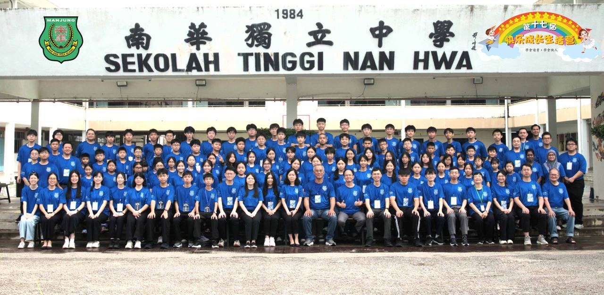
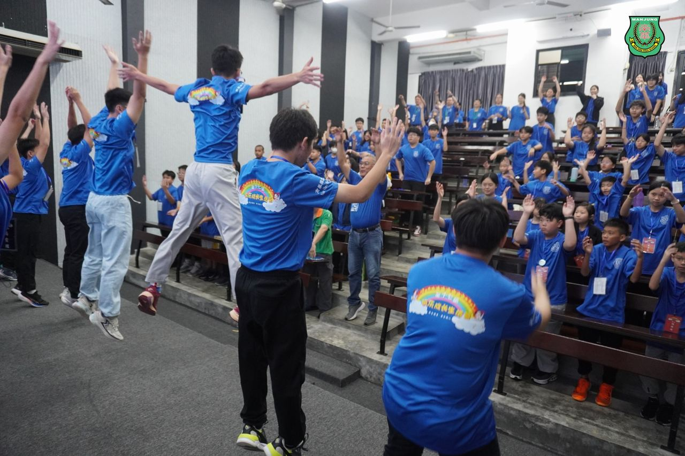
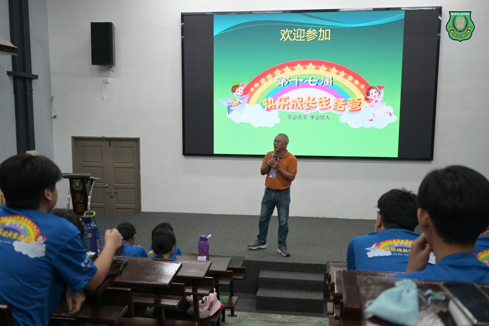
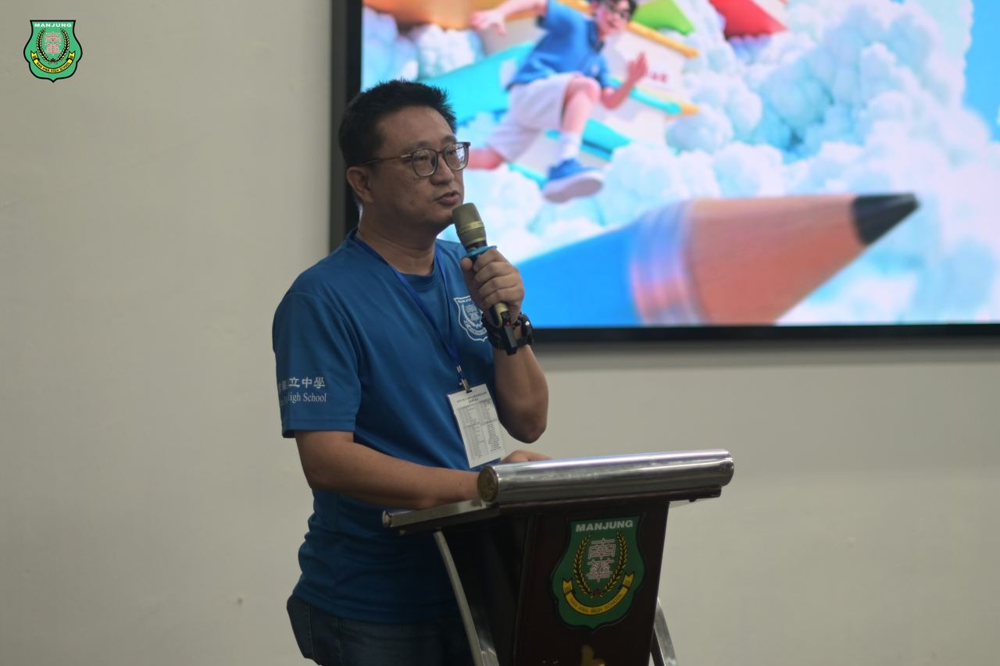
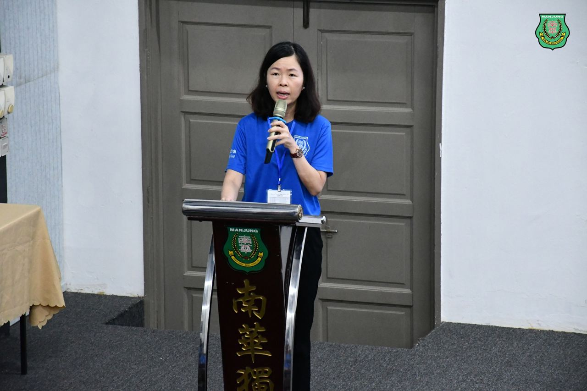
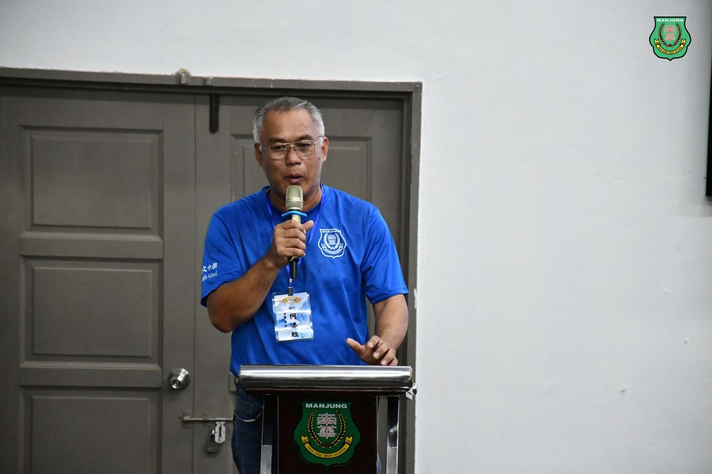
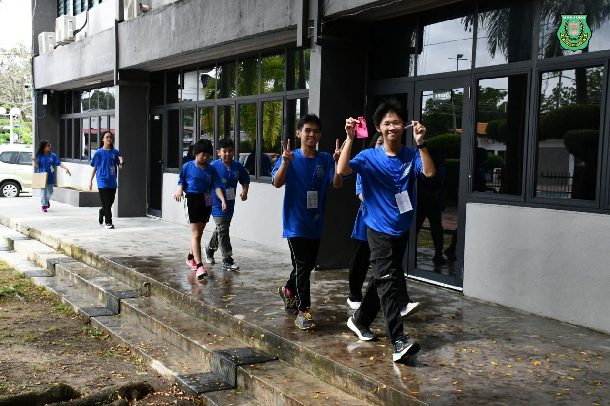
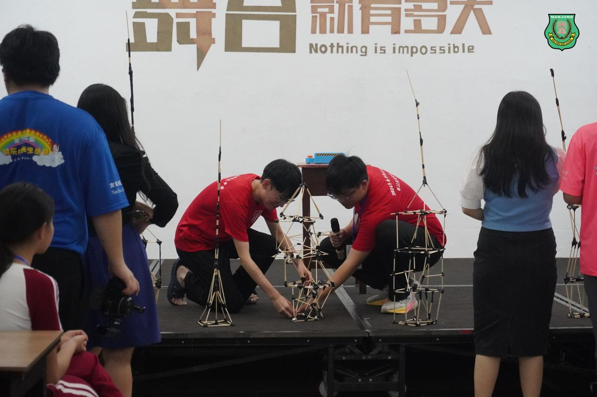

南华独中第17届小六快乐成长生活营
南华独中第17届小六快乐成长生活营
聚集县内外12所华小生在欢笑中立志
本校于12月12日至14日成功举办 “#第17届小六快乐成长生活营”。本届营会吸引了来自曼绒县内外共12所华小小六毕业生参与，最远的一位营员来自新加坡。经过三天两夜的洗礼后，营员目光中多了一份坚定，语气中不忘谦卑，已准备好讲营中所学，拿到生活中致用。
#生活营顾问暨南华独中董事总务何添胜 在开幕致辞时感性地表示，南华独中坚持了十七年风雨无阻地举办了十七届小六生活营，这不仅是一项常年活动，更是一份学校对社区教育的坚定承诺。何添胜董事提醒营员，所有的节目设计并非单纯的游戏堆砌，每一个环节背后都隐藏着生活的智慧与待人处事的哲理。 “这些隐藏的智慧，不会自动浮现，它需要你们全心全意地投入，放下拘谨与被动，才能在汗水与互动中真正领略。”
#生活营主席暨南华独中校长陈丽冰博士 的致辞则充满教育哲思。她直言，“快乐”与“成长”两个概念并不一定划上等号，且仅完成一项便是极为艰巨的目标，然而陈校长请营员们敬请期待工委团队接受了这项挑战。大家已经精心设计了‘重视成长的活动’，同时兼顾了‘快乐的体验’。” 并勉励营员在这三天中去验证“兼具成长与快乐”的可能，并在快乐中学习新知，在学习中感受成长的喜悦。
为了实践上述理念，本届生活营的课程设计极具张力。既有 #何欣霓老师 带领的“#华夏之旅”，让孩子透过甲骨文撬开中国文化的厚度；又有 #柯家浚老师 主导的“#科学之旅”，通过搭建建筑物以及地震模拟器探索结构的重要性；以及 #徐子轩老师 的“#艺术之旅”将祝福化作色彩烙印在风铃上，随着阵风而低吟艺术之美。 此外，#各学科主任们 设计的“#英雄之旅”闯关活动、酣畅淋漓的“水世界大战”以及雨夜中温暖的“烧烤会”，都让营员在动态的挑战中，实作了团队协作的真谛。
#生活营顾问暨南华独中董事阮忠兴 在闭幕仪式上总结时强调，生活营终会有结束的一刻，但离别不应只有感伤。 “留在你们记忆中的，除了欢笑与泪水，最重要的应该是这几天所学到的收获。无论是独立解决问题的能力，还是与人沟通的技巧，这些都是你们日后升上中学的‘傍身计’。” 他特别点出，营会最核心的价值在于“团队合作与互助精神”，希望营员们能将这种精神铭记于心，在未来的学习生涯中继续履行。
出席本次生活营开闭幕仪式的嘉宾包括有 #南华独中董事副总务拿督黄思贤、#董事副总务林道祥 及全体师长。







